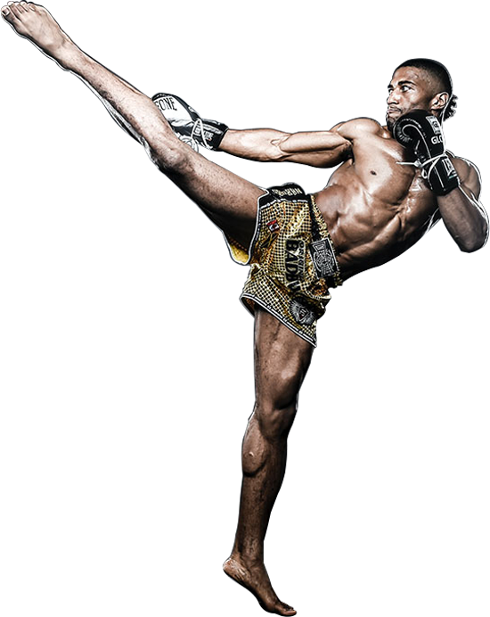

Historia
Tajski boks (muay thai) to narodowy sport Tajlandii, o wielowiekowej tradycji, który ściśle łączy się z kulturą i historią tego kraju. Powstał prawdopodobnie w XIII wieku i początkowo uprawiali go żołnierze tajskiej armii w celach obronnych. Był także ulubionym sportem królów, a z czasem zaczął rozprzestrzeniać się wśród niższych warstw społecznych.
W różnych częściach kraju organizowano zawody muay thai, które zawsze były wielkim wydarzeniem i skupiały uwagę wielu obserwatorów. Zwycięzcy otrzymywali honorowe tytuły i odznaczenia, które gwarantowały im dozgonny podziw i szacunek. Wtedy też narodził się cały rytuał zawodów muay thai – poprzedzał je specjalny taniec przed walką (waikhru), a w ich trakcie zawodnikom przygrywała tradycyjna melodia Sarama.
Wspólcześnie
Na początku XX wieku w formule tajskiego boksu zaszło wiele istotnych zmian. Przede wszystkim coraz częściej zaczęto zastępować owijacze (kaad chuek, czyli paski do obwiązywania dłoni) rękawicami bokserskimi. Było to spowodowane dążeniem do zmniejszenia urazowości muay thai. Zakazano także stosowania najbardziej brutalnych technik, takich jak uderzenia głową, kopnięcia w krocze, dźwignie, rzuty. Walki zaczęły odbywać się na ringach otoczonych linami, a zawodników podzielono na kategorie wagowe.
Mimo wielu elementów zaczerpniętych z tradycji zachodniego boksu, do dziś zawody muay thai odbywają się z towarzyszeniem tradycyjnej muzyki. Popularność sportu jest ogromna, a udział w walkach to dla wielu Tajów sposób na zarobek. Trenują nie tylko mężczyźni, ale i kobiety oraz dzieci. Pojedynki odbywają się zarówno na poziomie zawodowym, jak i amatorskim. Cechą stylu amatorskiego jest noszenie przez zawodników ochraniaczy na głowę, korpus i kolana.
Techniki
Tajski boks to sport walki typu full-contact, czyli taki, w którym uderzenia zadaje się z maksymalną siłą. Zadawanie bólu przeciwnikowi jest nieodłączną częścią każdego pojedynku (zwłaszcza w formule profesjonalnej). Tak jak w zwykłym boksie, stosuje się ciosy pięściami (proste, sierpowe, podbródkowe), ale dodatkowo zawodnicy mogą używać nóg i łokci. To właśnie uderzenia tymi częściami ciała są najbardziej bolesne. Bokserzy muszą cały czas być przygotowani na niespodziewany cios kolanem zadany w żebra albo trafienie łokciem prosto w twarz.Stosuje się także różne rodzaje kopnięć, m.in. kopnięcia okrężne za pomocą golenia lub stopy, które można zadać w udo, w bok albo w głowę przeciwnika. Ponadto zawodnicy muay thai często walczą w klinczu, tzn. zakładają sobie ramiona za głowę i trzymają za kark. W zwarciu najważniejsze jest, aby przeciwnik nie dał rady pociągnąć naszej głowy w dół, bo wtedy cios kolanem w twarz wyprowadzony od dołu może być nokautujący.
Efekty
Trenując muay thai można wzmocnić wszystkie mięśnie ciała i wyrzeźbić sylwetkę. U bokserów widać często dobrze rozbudowane ramiona i kark, które muszą być mocne, aby nie dać się sprowadzić do klinczu. Wyrabia się także zwinność, gibkość oraz refleks, ponieważ ten styl walki wymaga bardzo szybkiej reakcji obronnej – jeden fałszywy ruch i można otrzymać niespodziewany cios kolanem albo łokciem. Tajski boks pozwala także na skuteczną utratę tkanki tłuszczowej, ponieważ łączy w sobie elementy treningu siłowego i aerobowego. Jedna sesja treningowa trwa zazwyczaj ok. 60-90 minut, podczas których cały czas jest się w ruchu – dzięki temu można spalić mnóstwo kalorii.